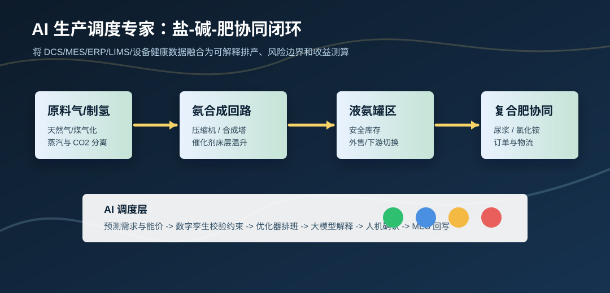

装置态势
稳态优化
调度变量
24h 滚动
调控师指令窗口
当班调控

在线工作流
覆盖度 86%
AI 调度建议
置信度 88%
保持高负荷，优先保障尿浆与复合肥订单
当前订单压力高、设备状态良好，建议合成回路维持 86% 负荷，夜间避开高价电窗口补库存，白班向尿浆和复合肥线倾斜。
AI 调控师身份卡
当班副驾驶
企业评审打分板
评审视角
吨氨成本寻优雷达
可挖潜 4.8%
合成氨负荷三案比选
推荐：冲刺
班次排产
经济最优
价值测算
保守口径
约束解释
4 条关注
数据就绪度
82%
模型治理
人机确认
异常工况预案
动态生成
执行监督闭环
自动跟踪
知识库自学习
持续沉淀
飞书协同中心
待授权接入
调度卡片预览
审批字段
协同日志
企业试点清单
先影子运行
班组使用流程
不改控制逻辑
验收与停用条件
保守口径